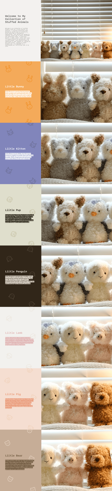

Final Project Process Visualizations
For my final project, I'm going to improve the visual look of my Every Picture project. The website's previous design was pretty basic, with a white and black background. My goal is to add some colors and variations to give it a more lively and charming appeal. Based on feedback from other designers, there's plenty of space for decorating. In the design comp below, I've created a distinct background for each animal, selecting colors that complement them. I'm aiming for a funky feel, and the font choice is inspired by the fonts I use in my Instagram stories whic h I found pretty engage viewers. Additionally, I want to include some playful illustrations for each animal, possibly animated to appear as if they're floating. To add an element of surprise, I also plan to have emojis cascade down the page as users scroll through each animal section.
